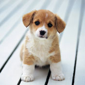

A Little About Us
In 1758, the taxonomist Linnaeus published in Systema Naturae a categorization of species which included the Canis species. Canis is a Latin word meaning dog,[21] and the list included the dog-like carnivores: the domestic dog, wolves, foxes and jackals. The dog was classified as Canis familiaris,[22] which means "Dog-family"[23] or the family dog. On the next page he recorded the wolf as Canis lupus, which means "Dog-wolf".[24] In 1978, a review aimed at reducing the number of recognized Canis species proposed that "Canis dingo is now generally regarded as a distinctive feral domestic dog. Canis familiaris is used for domestic dogs, althouIn 1758, the taxonomist Linnaeus published in Systema Naturae a categorization of species which included the Canis species. Canis is a Latin word meaning dog,[21] and the list included the dog-like carnivores: the domestic dog, wolves, foxes and jackals. The dog was classified as Canis familiaris,[22] which means "Dog-family"[23] or the family dog. On the next page he recorded the wolf as Canis lupus, which means "Dog-wolf".[24] In 1978, a review aimed at reducing the number of recognized Canis species proposed that "Canis dingo is now generally regarded as a distinctive feral domestic dog. Canis familiaris is used for domestic dogs, althou
